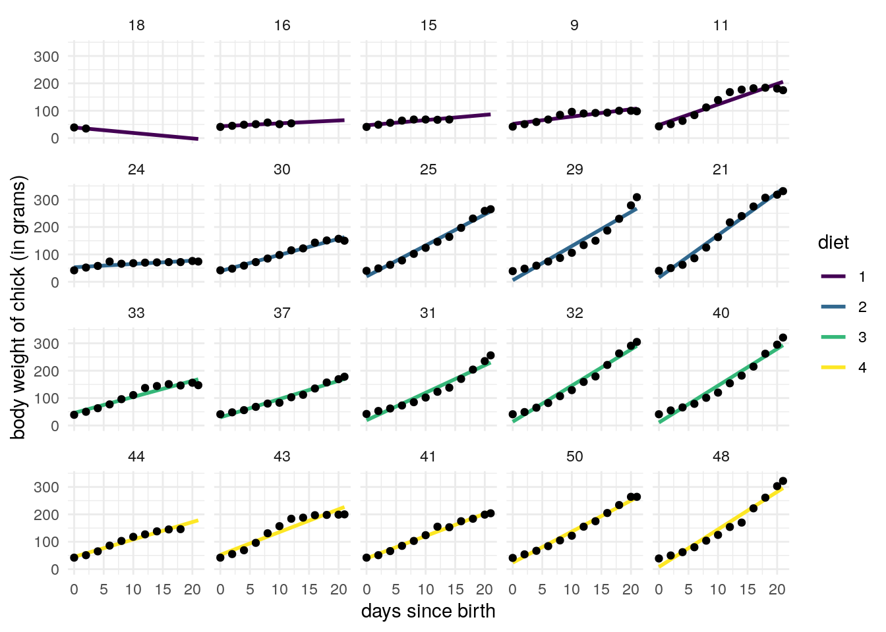

6 Linear mixed models
A linear mixed model is a two-level hierarchical model of the form
\[\begin{align} \mathcal{B}_i &\sim \mathsf{No}_q(\boldsymbol{0}_q, \boldsymbol{\Omega}) \nonumber\\ \boldsymbol{Y}_i \mid \mathcal{B}_i=\boldsymbol{b}_i &\sim \mathsf{No}_{n_i}(\mathbf{X}_i\boldsymbol{\beta} + \mathbf{Z}_i\boldsymbol{b}_i, \mathbf{R}_i) \tag{6.1} \end{align}\] where \(i\) is the identifier of the group (clustered data) or individual (longitudinal data).
The \(n_i \times q\) model matrix \(\mathbf{Z}_i\) contains a subset of the columns of \(\mathbf{X}_i\). We term \(\mathbf{X}_i\boldsymbol{\beta}\) fixed effects and \(\mathbf{Z}_i\boldsymbol{b}\) random effects. The specification of (6.1) is particularly convenient for simulation: first sample a random effect vector \(\boldsymbol{b}_i\) common to the group, then simulate new responses whose mean is shifted by \(\mathbf{Z}_i\boldsymbol{b}_i\) relative to the linear regression. The matrix \(\mathbf{R}_i\) is typically the identity matrix \(\sigma^2\mathbf{I}_{n_i}\), but we could include slightly more general settings, including autoregressive errors.
Because the multivariate normal distribution, one can show that the joint distribution of \((\boldsymbol{Y}, \mathcal{B})\) is jointly normal, that the marginal response \(\boldsymbol{Y}_i\) is also normal. If we integrate out the random effect, \[\begin{align} \boldsymbol{Y}_i \sim \mathsf{No}_{n_i}( \mathbf{X}_i \boldsymbol{\beta}, \mathbf{Z}_i\boldsymbol{\Omega}\mathbf{Z}_i^\top + \mathbf{R}_i) \tag{6.2} \end{align}\]
In practice, we do not observe the random effect terms \(\boldsymbol{b}_i\), so the inclusion of random effects translates into a more complex covariance structure which is additive: one component, \(\mathbf{R}_i\), represents the covariance matrix of the random errors, while \(\mathbf{Z}_i\boldsymbol{\Omega}\mathbf{Z}_i^\top\) is the additional variability induced by random effects. We denote by \(\boldsymbol{\psi}\) the covariance parameters of \(\boldsymbol{\Sigma}_i= \mathbf{Z}_i\boldsymbol{\Omega}\mathbf{Z}_i^\top + \mathbf{R}_i\) and the fixed effect parameters \(\boldsymbol{\beta}\).
Parameter estimates are obtained from the likelihood of (??) and estimated using restricted estimation maximum likelihood (REML) or via maximum likelihood. In both cases, the optimization problems reduce to finding estimates of \(\boldsymbol{\psi}\) given that we an explicit solution for the restricted maximum likelihood parameters \[\begin{align*} \widehat{\boldsymbol{\beta}}_{\boldsymbol{\psi}} = (\mathbf{X}^\top\boldsymbol{\Sigma}^{-1}\mathbf{X})^{-1}\mathbf{X}^\top\boldsymbol{\Sigma}^{-1}\boldsymbol{Y} \end{align*}\] which is the generalized least square solutions.
6.1 Partial pooling
Random effects naturally induce correlation between observations and the conditional mean of \(\boldsymbol{Y}_i \mid \mathcal{B}_i\) includes a group-effect. The alternative is to include another fixed effect via an binary indicator of group, \(g_i\). There are many disadvantages to using this latter specification, since new observation or slope for incomplete records cannot be reliably estimated, in addition to having an overparametrized model with in addition no coefficients for explanatory variables that do not change within group.

There are four diets, and individuals are ordered by their initial weight. We can see that some chicks are lost to follow-up, possibly dead. While this is potentially a form of informative censoring, we will omit it from further analyses.

Figure 6.1: Fitted regression lines for the model with a single common slope (complete pooling) and model with chick-specific intercept and slopes
We can compare the group effect obtained by including in the model matrix \(\mathbf{X}\)